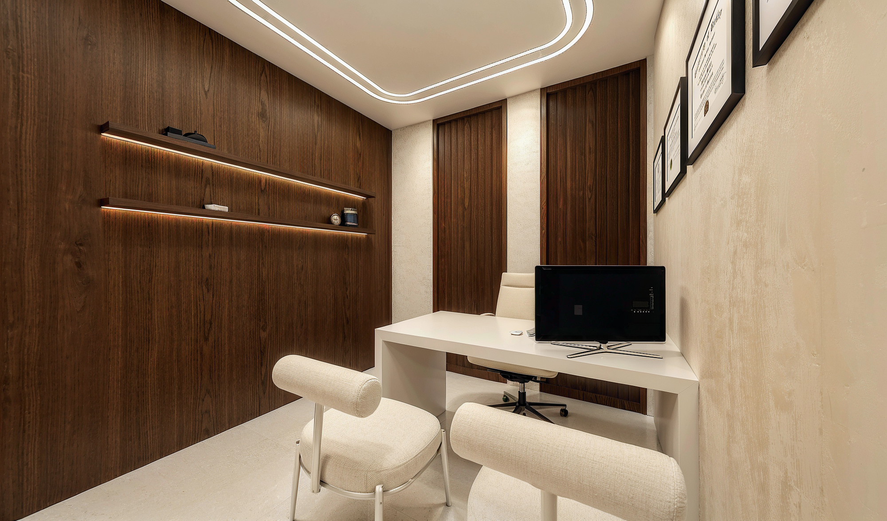

- Home
- Treatments
- Children
Early & interceptive treatment
Seen at seven. Treated only when it helps.
An early visit is not an early appliance. It is a look at how the jaws are growing, so that the small problems can be guided now instead of corrected surgically later.

In one sentence
Children should first be assessed by age seven, when the jaws and first adult teeth are visible; most are simply monitored, and the minority who need treatment gain the most from being caught early.
What we look for
Crossbites, narrow or high palates, crowding with no space for adult teeth, protruding front teeth, thumb habits, early or late loss of baby teeth — and how the child breathes.
Chronic mouth breathing, snoring, dark circles and restless sleep in a child are orthodontic findings, not just paediatric ones. A narrow upper jaw is often the reason, and it is far easier to widen at eight than at twenty-eight.
What early treatment involves
Usually a simple expander, sometimes a partial set of braces, worn for six to twelve months. The goal is to create room and correct asymmetry while the bone is still cooperative.
Full braces or aligners, if needed at all, wait until the adult teeth have arrived.
Our monitoring programme
If nothing needs doing, nothing is done. Children we see early join a growth-monitoring programme: a short visit every six to twelve months, at no charge, with photographs so we can show parents exactly what is changing.
Good to know
Frequently asked
Straight answers.
Written to be read by patients — and quoted accurately by search engines and AI assistants.
Why age seven?
By seven the first adult molars and incisors are in place, which reveals the bite and the width of the arches. Problems visible at seven can often be guided with growth rather than corrected against it.
Does an early visit mean early braces?
No. Most children seen at seven need nothing but monitoring, which we provide at no charge until the right moment arrives.
My child snores and sleeps with their mouth open. Is that orthodontic?
It can be. Mouth breathing and snoring in children are frequently associated with a narrow upper jaw, enlarged tonsils or adenoids, or nasal obstruction. We assess the jaws and airway and refer to an ENT specialist where indicated.
Will early treatment mean no braces later?
Sometimes, but not usually. Early treatment reduces severity and can avoid extractions or surgery; a short second phase in the teenage years is common and expected.
Come see the room.
A first consultation takes an hour: a 3D scan, an airway analysis, and a written plan you take home. No pressure, no sales script.